Pokémon in the NYPL archives
2018-1-21 14:10:08
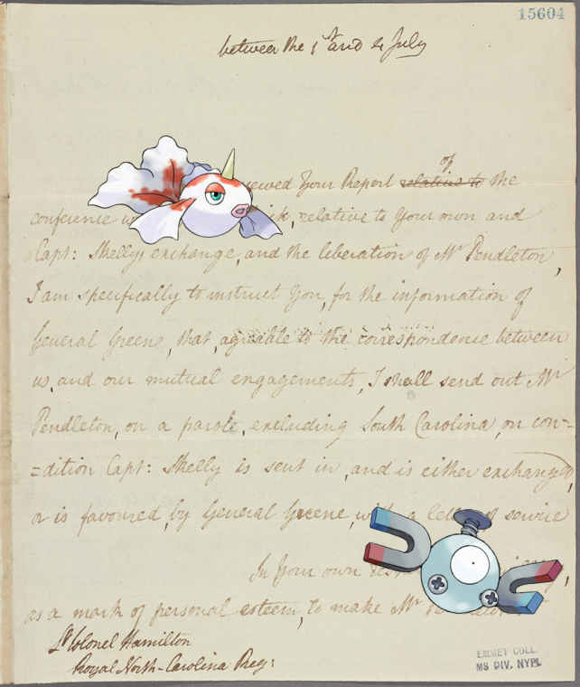
Goldeen, Magnemite on Letter to Lieut. Col. [John] Hamilton http://digitalcollections.nypl.org/items/c6587010-002d-0130-6cee-58d385a7bc34
2018-1-21 12:10:09
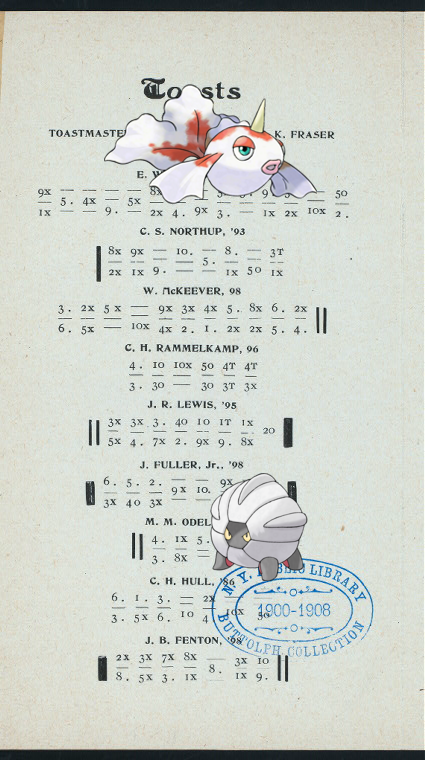
Shelgon, Goldeen @ DINNER [held by] QUILL AND DAGGER CLUB [at] "DEEMING HALL,ITHACA, NY" http://digitalcollections.nypl.org/items/af628780-c532-012f-b36a-58d385a7bc34
2018-1-21 10:10:06
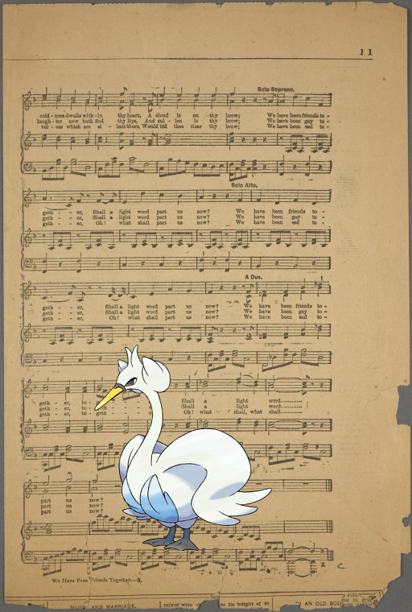
Swanna + We have been friends together http://digitalcollections.nypl.org/items/c9516200-c590-012f-7688-58d385a7bc34
2018-1-21 08:10:05
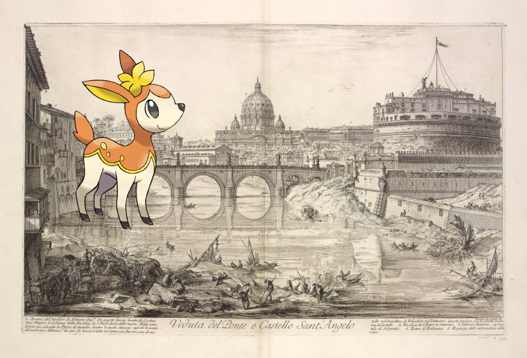
; Veduta del Ponte e Castello Sant' Angelo.. http://digitalcollections.nypl.org/items/d2b232e0-c6c9-012f-c1db-58d385a7bc34
2018-1-21 06:10:05
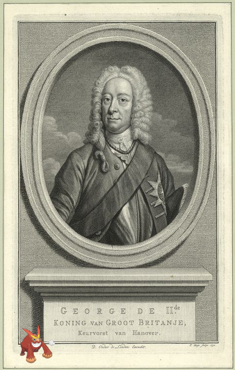
Darmanitan-Standard | George de IIde. Konig van Groot Britanje, Keurvorst van Hanover. http://digitalcollections.nypl.org/items/6e8fa280-c608-012f-2e9d-58d385a7bc34
2018-1-21 04:10:10
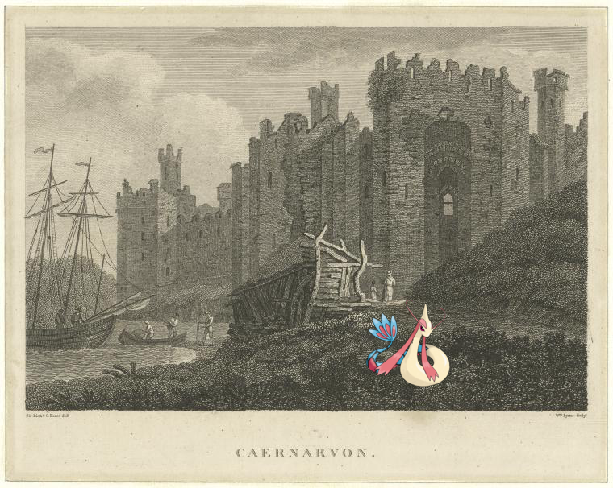
Milotic + Carnarvon, Wales.. http://digitalcollections.nypl.org/items/d2eb6ec0-c606-012f-72af-58d385a7bc34
2018-1-21 02:10:04
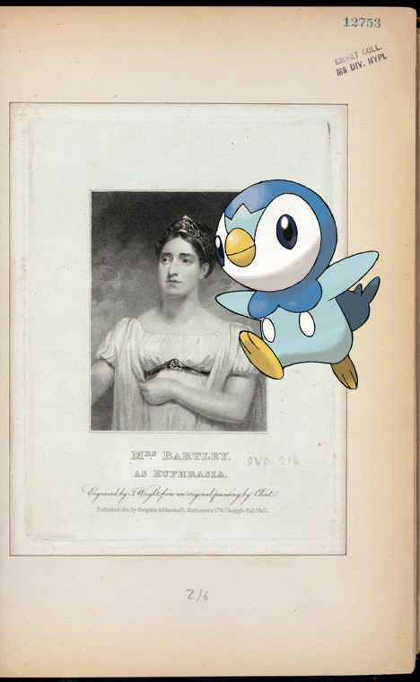
Piplup on Mrs. Bartley as Euphrasia. http://digitalcollections.nypl.org/items/5069ab10-c60e-012f-eac1-58d385a7bc34
2018-1-21 00:10:08
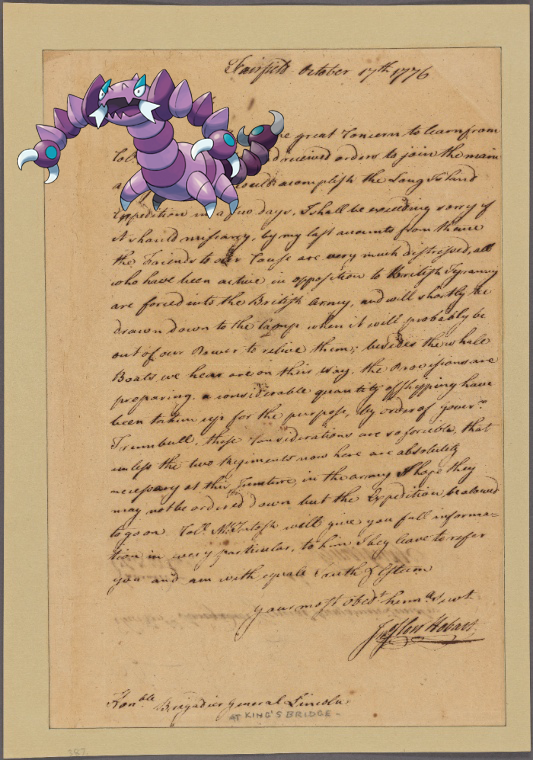
Drapion – Letter to Gen. Benjamin Lincoln, Kingsbridge [N. Y.]! http://digitalcollections.nypl.org/items/1013cc50-c533-012f-b4b4-58d385a7bc34
2018-1-20 22:10:07
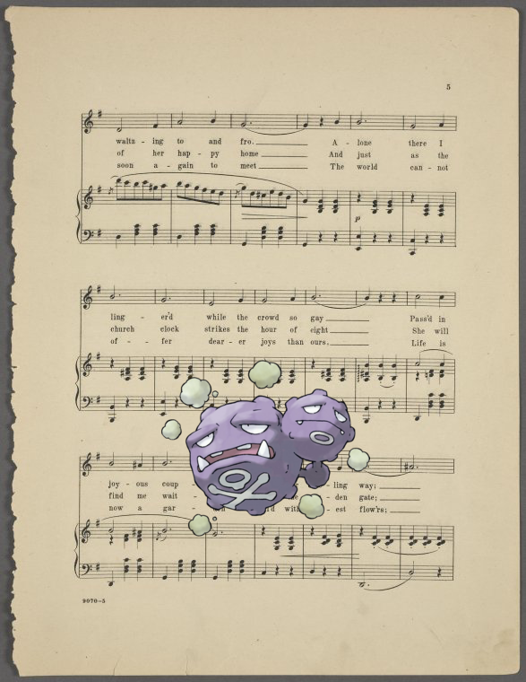
Weezing ; I met her at the ball! http://digitalcollections.nypl.org/items/831ccc30-c58e-012f-424b-58d385a7bc34
2018-1-20 20:10:05
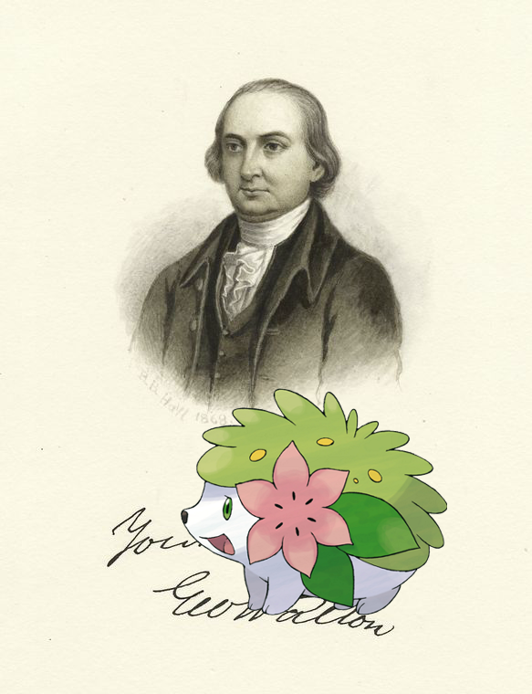
; George Walton. http://digitalcollections.nypl.org/items/1df5a380-c606-012f-a541-58d385a7bc34
2018-1-20 18:10:48
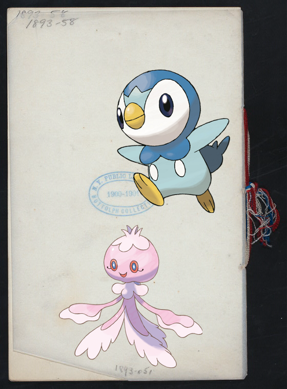
Piplup, ; CELEBRATION OF THE SIXTY-NINTH ANNIVERSARY OF THE FORMATION OF THE REGIMENT AND THE THIRTY -SECOND A… http://digitalcollections.nypl.org/items/84b8ceb0-c531-012f-a399-58d385a7bc34
2018-1-20 16:10:07
Steelix – William C.C. Claiborne. http://digitalcollections.nypl.org/items/067cea50-c60b-012f-9b75-58d385a7bc34
2018-1-20 14:10:04
Bastiodon, Lumineon | Italy. Kingdom of the Two Sicilies, 1849-1859.. http://digitalcollections.nypl.org/items/ace7a220-c54b-012f-e333-58d385a7bc34
2018-1-20 12:10:05
Pelipper + Suffolk County, V. 2, Double Page Plate No. 21 [Map bounded by Kings Park]. http://digitalcollections.nypl.org/items/c28b5fd0-c5f8-012f-c463-58d385a7bc34
2018-1-20 10:10:05
Kabutops ; Mihrâs wrestles with Barzû's dîv before the entrance to the dîv's cave. http://digitalcollections.nypl.org/items/8813f810-c6c2-012f-fad2-58d385a7bc34
2018-1-20 08:10:06
Sawsbuck @ There'll be no wedding here today http://digitalcollections.nypl.org/items/acc56e10-c591-012f-ab15-58d385a7bc34
2018-1-20 06:10:05
Luxray on Luther Martin! http://digitalcollections.nypl.org/items/9dc394b0-c60b-012f-df38-58d385a7bc34
2018-1-20 04:10:10
Kakuna + Letter to [Horatio] Gates [New York]. http://digitalcollections.nypl.org/items/e8d4cd30-002d-0130-e454-58d385a7bc34
2018-1-20 02:10:08
Lapras + Index Map! http://digitalcollections.nypl.org/items/c1db0c40-c5ec-012f-9756-58d385a7bc34
2018-1-20 00:10:18
Hippowdon, Furret @ Tilden, Henrietta, 1830, 1835 - 1839, n.d.. http://digitalcollections.nypl.org/items/c5319290-c5c0-012f-d4c8-58d385a7bc34
2018-1-19 22:10:06
Skrelp on Document http://digitalcollections.nypl.org/items/9ffbc880-c532-012f-b3cf-58d385a7bc34
2018-1-19 20:10:11
Mamoswine on Cazembe Player on the Clincufo. http://digitalcollections.nypl.org/items/e821f410-c6e0-012f-45fc-58d385a7bc34
2018-1-19 18:10:09
Latios, Noctowl + Only an east side girl. http://digitalcollections.nypl.org/items/8a3e85a0-c590-012f-8bd6-58d385a7bc34
2018-1-19 16:10:13
, Huntail – New Oregon P.O. [Village]; North Collins [Village]; North Collins [Township]; Langford P.O. [Villag… http://digitalcollections.nypl.org/items/d0de84f0-c5f7-012f-c152-58d385a7bc34
2018-1-19 14:10:08
Starmie on Map of the State of New York.. http://digitalcollections.nypl.org/items/fc214220-c5f9-012f-f897-58d385a7bc34
2018-1-19 12:10:05
Virizion + Thèbes. Karnak, Temple de Khons! http://digitalcollections.nypl.org/items/57f41810-c6c6-012f-2592-58d385a7bc34
2018-1-19 10:10:04
– The castle of Tripoli, a stronghold of the crusaders. It was converted into an imperial penitentiary by Midh… http://digitalcollections.nypl.org/items/191536d0-c5f3-012f-de5b-58d385a7bc34
2018-1-19 08:10:04
Suicune – Document! http://digitalcollections.nypl.org/items/5373c2f0-0029-0130-406c-58d385a7bc34
2018-1-19 06:10:05
+ The Luxor. Southwest Corner 115th Street and Broadway.. http://digitalcollections.nypl.org/items/a2eceed0-c611-012f-7a1d-58d385a7bc34
2018-1-19 04:10:04
Buneary @ The highlands of the Hudson. folder 49,50. http://digitalcollections.nypl.org/items/929a3db0-c6d1-012f-9df2-58d385a7bc34
2018-1-19 02:10:07
Beldum ; Isadora Duncan. http://digitalcollections.nypl.org/items/86b709f0-14d5-0131-9680-58d385a7b928
2018-1-19 00:10:11
Seviper on Orange County, Double Page Plate No. 16 [Map bounded by Virginia Ave., Watchung Ave., Alden St., Mou… http://digitalcollections.nypl.org/items/2a4464e0-c5ed-012f-a99e-58d385a7bc34
2018-1-18 22:10:04
Shroomish – Sea Wall, looking towards Ft. Marion, St. Augustine, Fla.. http://digitalcollections.nypl.org/items/184f8f40-c539-012f-6cd6-58d385a7bc34
2018-1-18 20:10:05
Braixen on Pastoral dance scenes of the eighteenth century! http://digitalcollections.nypl.org/items/2866f370-882a-0130-8e2a-58d385a7bbd0
2018-1-18 09:52:48
Musharna | SPISZEDDEL [held by] ALEMANISCH CLUB [at] SCHWITZERHOF LUZERN [SWITZERLAND?] ((HOTEL ?) http://digitalcollections.nypl.org/items/189b0f90-c531-012f-3005-58d385a7bc34


![Musharna | SPISZEDDEL [held by] ALEMANISCH CLUB [at] SCHWITZERHOF LUZERN [SWITZERLAND?] ((HOTEL ?) http://digitalcollections.nypl.org/items/189b0f90-c531-012f-3005-58d385a7bc34](media/finding-RXYXhBwP.png)